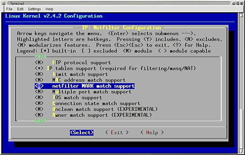
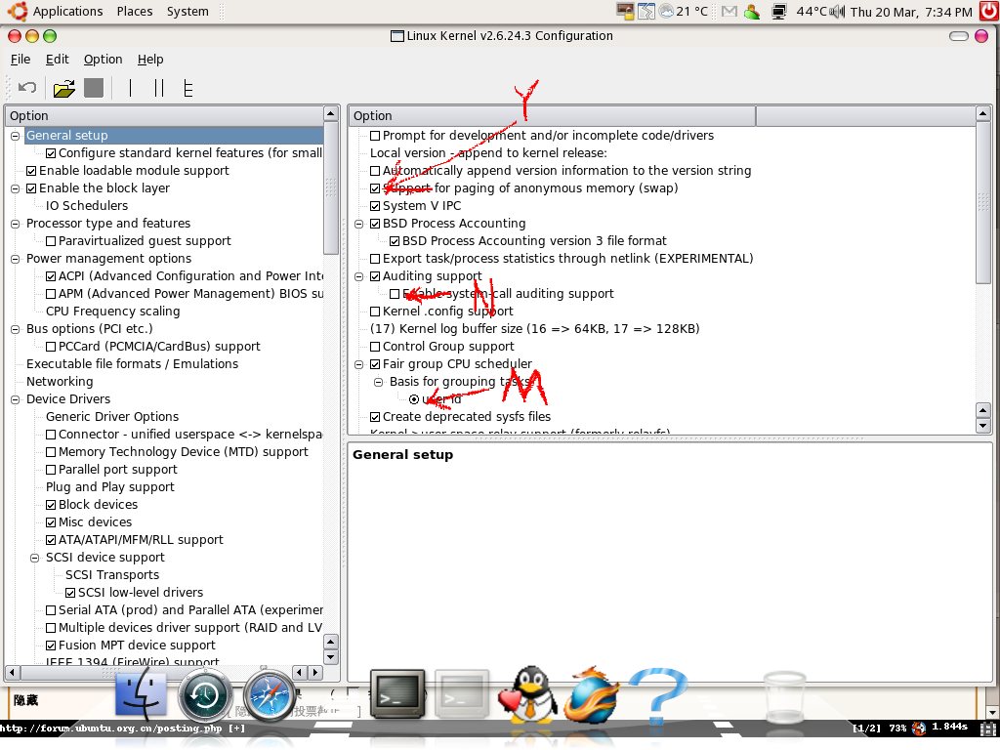

下载内核源代码：http://www.kernel.org/
注意，点击2.6.25内核的F版，即完整版。
如果你懒得去网站点联接，运行下列命令：
$cd ~ $ wget http://www.kernel.org/pub/linux/kernel/v2.6/linux-2.6.25.10.tar.bz2
安装有关编译程序。安装make ,gcc, make-kpkg,运行menuconfig等等和编译内核相关的工具。
安装不了，请检查/etc/apt/sources.list 文件。
有关命令：
$sudo apt-get install build-essential kernel-package libncurses5-dev
注意，网上很多教程上说应该解压到 /usr/src,纯属以讹传讹，linux掌门人linus说解压到任何目录上都可以。当然，linus的说法是正确的。我放在自己的主目录下的src目录。
如果你下载源代码是放到自己的主目录下或者运行上面的wget下载的，那么运行下列命令：
$ cd ~ $ mkdir src && tar jfx linux-2.6.25.10.tar.bz2 -C src/
现在，源代码就在 ~/src/linux-2.6.25.10
注意目录容量要到达1.5G
进入源代码的目录，准备下一步的工作。后面都在这个目录里面进行。
$ cd ~/src/linux-2.6.25.10
首先，清理以前编译时留下的临时文件。如果是刚刚解开的包，不需要执行这步。如果是第二次或者是第n次编译，那么一定要执行。
相关命令如下：
$ sudo make mrproper
网上很多教程上说把现在使用的内核的config拷贝过来参考，据实验，是不需要的，ubuntu还有debian会自动做这步。不过这条命令倒是可以学习一下。当然你可以将以前的配置拷贝过来。
命令：
cp /boot/config-`uname -r` ./.config
./.config的意思是拷贝到当前目录并以.config重命名。
注意：在配制内核时，修改的文件为linux-2.6.25.10文件夹中的.config文件。这是个隐藏文件，更改查看方式可以看到。是make mrproper时自动拷贝过来的，下载的源包中没有。
从linux-2.6.32开始可以使用make localmodconfig自动精简内核, 菜鸟也能轻松精简内核到十几MB
注意: 该方法会自动去掉一些从开机到当前没用使用的模块(主要是驱动模块),
所以你可以使用一下你的摄像头, 挂载一下iso文件.....
以保证需要的模块不会被精简掉, 否则使用新内核时会发现不能挂载iso文件, 不能使用某些外设等等.
命令如下:
make localmodconfig
menuconfig相关命令：
$sudo make menuconfig

配置用到的键只有几个，esc退出菜单;空格改变选项状态;光标键上下左右移动,回车选定。
选项意义：M是编译成可以随时加入的模块，*是编译进入内核，空就是不要。
xconfig 相关命令：
sudo aptitude install libqt3-headers libqt3-mt-dev libqt3-compat-headers libqt3-mt #安装xconfig依赖包
make xconfig

配置选项非常多，具体配置可以参考金步国先生翻译的资料：Linux 2.6.19.x 内核编译配置选项。
为了一次成功，请大家遵循一个原则，如果你自己使用的内核已经选用了某个选项，如果你没用充分的理由，不要随便改动。这样虽然内核不那么精简，但是不容易出现问题。
我们可以精简的部分是硬件模块部分，对于自己没有的硬件要毫不犹豫的清除。
按照我的习惯，先在上一层目录保存一个备份，文件名类似 ../config20080630
然后再保存到当起目录,文件名 .config
退出设置程序。
ubuntu的工具是make-kpkg,和其他的发行版相比，步骤相对简单。
相关命令:
$sudo make-kpkg clean #这条命令好像不要超级权限，很多资料上说要，不过这不是原则问题。 $ sudo make-kpkg -initrd --initrd --append-to-version=-dell1400 kernel_image kernel-headers
上述命令中的dell1400可以用自己喜欢的字符代替，最后的字符一定是数字.
编译完成就是安装工作。编译好的内核在上一层目录。包括linux-headers-...-_i386.deb和linux-image-...-i386.deb两个文件，如果你不搞开发的话，只要安装内核就可以，头文件以后要用的时候再说。
安装相关命令：
$ cd .. $ sudo dpkg -i linux-image-（按tab键）
文件名很长，如果不用tab自动补足是不可能的，tab键万岁。
$ sudo reboot
如果你的显卡是nvidia显卡，启动之后往往无法正常进入x－window。即使能看到gdm登录界面，效果也是很差的。
那么就要安装nvidia驱动。